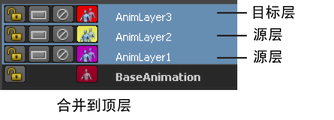

“动画层编辑器”(Animation Layer Editor)包括三个主菜单：
- “层”菜单
- “选项”菜单
- “显示”(Show)菜单
“层”菜单
“层”(Layers)菜单包含下列各项：
- 创建空层(Create Empty Layer)
- 创建空的动画层。
- 从选定对象创建层(Create Layer from Selected)
- 创建一个（默认情况下）包含选定对象的所有属性的动画层。
- 创建覆盖层(Create Override Layer)
- 创建一个设定为“覆盖”(Override)模式的空动画层。
- 从选定对象创建覆盖层(Create Override Layer from Selected)
- 创建一个（默认情况下）包含选定对象的所有属性的新动画层，并将该层设定为“覆盖”(Override)模式。
- 创建层选项(Create Layer Options)
- “创建层选项”(Create Layer Options)允许您设定新层将使用的模式。从下列选项中进行选择：
-
- 穿过(仅覆盖模式) (Passthrough (Override Only))
- 将新的覆盖层设定为“穿过”(Passthrough)模式。请参见动画层模式。
- 旋转累积按组件(Rotation Accumulation By Component)
- 将新层设定为使用“按组件旋转累积”(By Component Rotation Accumulation)模式。请参见下文中的“旋转累积”(Rotation Accumulation)。
- 旋转累积按层(Rotation Accumulation By Layer)
- 将新层设定为使用“按层旋转累积”(By Layer Rotation Accumulation)模式。
- 缩放累积相乘(Scale Accumulation Multiply)
- 将新层设定为使用“缩放相乘累积”(Scale Multiply Accumulation)模式。请参见下文中的“缩放累积”(Scale Accumulation)。
- “缩放累积”(Scale Accumulation)相加
- 将新层设定为使用“相加缩放累积”(Additive Scale Accumulation)模式。
- 添加选定对象(Add Selected Objects)
- 将选定对象的属性添加到选定动画层。请参见将属性添加到动画层和从动画层中移除属性。
-
- 添加选定对象(Add Selected Objects)

- 打开“将对象添加到动画层选项”(Add Objects To Animation Layers Options)，允许您将属性组添加到层。从下列选项中进行选择：
-
- 所有可设定关键帧(All keyable)
- 将选定对象的所有可设定关键帧的属性添加到选定层。
- 来自通道盒(From Channel Box)
- 可用于将“通道盒”(Channel Box)中选定的属性添加到选定层。选择该选项后，您可以在“通道盒”(Channel Box)中选择属性，并使用“层 > 添加选定对象”(Layers > Add Selected Objects)将它们添加到选定层。
- 除以下项外全部可设定关键帧的属性(All Keyable Except)
- 可用于添加除特定类型的属性以外的所有可设定关键帧的属性。使用该列表可选择要排除的属性类型：
- 平移(Translate)
- 旋转(Rotate)
- 缩放(Scale)
- 动力学(Dynamic)
- 布尔(Boolean)
- 枚举(Enum)
- 添加选定对象(Add Selected Objects)
- 移除选定对象(Remove Selected Objects)
- 从选定层中移除选定对象的所有属性。
- 提取选定对象(Extract Selected Objects)
- 从选定层提取选定对象，并将其放置在新层上。新层将根据选定层命名，并加上后缀 _extract。
- 选择对象(Select Objects)
- 在场景中选择具有指定给选定层的属性的所有对象。
- 重复层(Duplicate Layer)
- 创建选定层的副本，其中包含所有相同的属性和动画。
- 重复层(无动画) (Duplicate Layer (No Animation))
- 创建选定层的副本，其中包含所有相同的属性（无动画）。
- 合并层(Merge Layers)
- 合并选定的动画层。请参见合并动画层
-
- “合并层”(Merge Layers) >
- 打开“合并层选项”(Merge Layer Options)。从下列选项中选择。
-
- 合并到(Merge To)
- 设定您希望在堆栈中发生合并的方向。从下列选项中进行选择：
-
- 顶部选定层(Top Selected Layer)
- 将选定层合并到堆栈中最高处的选定层（堆栈中的最高层为“目标”层，所有其他层为“源”层）。

- 底部选定层(Bottom Selected Layer)
- 将选定层合并到堆栈中最低处的选定层（最低层为“目标”层，所有其他选定层为“源”层）。
-
- 层的层次(Layers Hierarchy)
- 设定是否必须选择子层才能包括在合并中。从下列选项中进行选择：
-
- 选定(Selected)
- 必须选择子层才能将其合并。
- 包括子对象(Include Children)
- 包括要合并的任何父层的子层（即使未逐个选择它们）。
-
注： 如果“包括子对象”(Include Children)处于禁用状态，即使您启用了“删除烘焙层”(Delete Baked Layers)，合并后也不会删除父层。将合并父层中的对象和动画，而空的父层仍然作为其子层的父层。
- 结果层模式(Result Layer Mode)
- 设定结果层的模式。从下列选项中进行选择：
-
- 自动(Automatic)
- 除非所有合并的层都处于“覆盖”(Override)模式，否则将层设定为“相加”(Additive)模式。如果所有合并的层都处于“覆盖”(Override)模式，则结果层处于“覆盖”(Override)模式。
- 相加(Additive)
- 将结果层设定为“相加”(Additive)模式。
- 覆盖(Override)
- 将结果层设定为“覆盖”(Override)模式。
- 删除烘焙(合并)层(Delete Baked (Merged) Layers)
- 启用时，合并动画层的对象和动画之后会删除这些动画层。
-
注： 如果“包括子对象”(Include Children)处于禁用状态，则即使启用了“删除烘焙层”(Delete Baked Layers)，也不会删除父层。
- 禁用时，合并动画层的对象和动画后，空动画层保留在堆栈中。
- 采样频率(Sample by)
- 设定 Maya 对动画进行求值及生成关键帧的频率。请参见“烘焙模拟选项”(Bake Simulation Options)中的“采样频率”GUID-A11424B4-8384-4832-B18D-01264E1A19D1.htm#GUID-A11424B4-8384-4832-B18D-01264E1A19D1__WS73099CC142F48755-1257E12111BF108800E2C23。
- 默认值为 1。
- 智能烘焙(Smart Bake)
- 请参见智能烘焙。
- 提高保真度(Increase Fidelity)
- 请参见提高保真度。
- 保真度关键帧容差(Fidelity Keys Tolerance)
- 请参见保真度关键帧容差。
- “合并层”(Merge Layers) >
- 为选定对象提取未分层的动画(Extract Non-Layered Animation for Selected Objects)
- 将未分层的动画从选定对象提取到新层上。请参见将动画提取到动画层或从动画层提取动画。
- 为所有对象提取未分层的动画(Extract Non-Layered Animation for All Objects)
- 将场景中所有对象的任何未分层动画提取到新层上。请参见将动画提取到动画层或从动画层提取动画。
- 全选(Select All)
- 选择堆栈中的所有动画层。
- 选择分支(Select Branch)
- 在层次中选择选定父层下的所有子层。
- 选择层节点(Select Layer Node)
- 在“通道盒”(Channel Box)中选择动画层节点并显示该节点的属性。
- 导出层(Export Layer)
- 可用于将选定层作为单独文件导出。导出的文件包括层节点、其动画曲线和融合节点。请参见导入和导出动画层。
- 导出分支(Export Branch)
- 可用于导出选定父层下的层的整个层次。
-
注： 一次只能导出一个分支。
- 成员身份(Membership)
- 为动画层打开“关系编辑器”(Relationship Editor)，以便添加和移除属性。请参见将对象或属性添加到动画层和将其从动画层中移除。
- 属性编辑器(Attribute Editor)
- 为选定的动画层打开“属性编辑器”(Attribute Editor)。
- 删除(Delete)
- 删除选定层和所有关联的动画曲线。请参见删除或清空动画层。
- 清空(Empty)
- 从选定层中移除所有属性并删除动画曲线。
- 删除空层(Delete Empty Layers)
- 在堆栈中删除未指定属性的所有层。
- 层模式(Layer Mode)
- 设定主动画层模式（详细信息请参见动画层模式）。从下列选项中选择：
- 相加(Additive)
- 将层设定为“相加”(Additive)模式。
- 覆盖(Override)
- 将层设定为“覆盖”(Override)模式。
- 穿过(Passthrough)
- 将层设定为“覆盖-穿过”(Override-Passthrough)模式。
- 旋转累积(Rotation Accumulation)
- 当相同的旋转属性添加到堆栈中的多个动画层时，此选项可让您设置选定层的旋转曲线与共用相同属性的任何之前层的组合方式。
- 从下列选项中进行选择：
-
- 按组件(By Component)
- 按组件对旋转值进行加权，并通过添加每个独立 Euler XYZ 值计算结果旋转曲线。
- 按层(By Layer)
- 按层对旋转值进行加权，并使用连接的四元数值计算结果旋转曲线。
-
注： 该计算可能根据层处于“相加”(Additive)模式还是“覆盖”(Override)模式而变化。对于相加层，计算涉及添加加权的旋转值。对于覆盖层，计算使用层之间的四元数球面线性插值融合。
- 缩放累积(Scale Accumulation)
- 当相同的比例属性添加到堆栈中的多个动画层时，可以使用该选项设定选定层的缩放曲线如何与共享相同属性的任何之前的层组合。
- 从下列选项中进行选择：
-
- 相乘(Multiply)
- 使用层权重值作为指数计算每个层的独立 XYZ 缩放值，并通过将每个独立 XYZ 缩放值相乘计算结果缩放曲线。
- 相加(Additive)
- 通过添加每个独立的 XYZ 值计算结果缩放曲线。
- 打包到资产中(Package Into Assets)
- 为堆栈中的每个动画层和基础动画(BaseAnimation)创建资产。每个层的相关节点（包括层节点、融合节点和动画曲线）将自动放置在资产中。
- 请参见将动画层打包到资产中。
“选项”菜单
“选项”菜单包含下列各项：
- 选定层中的关键帧(Key in Selected Layer(s))
- 当该设定关键帧模式处于活动状态时，仅在所选的动画层中设定关键帧。如果要将工作流保持简单并手动选择要在其上设定关键帧的每个动画层，请使用该设定关键帧模式。
-
注意： 使用该设定关键帧模式时，必须选择“基础动画”(BaseAnimation)栏，才能在未包括在动画层中的对象上设定关键帧。
- 如果在选定动画层中未找到要设定关键帧的属性，或者选定层已锁定，则不会设定关键帧。
- 一次只能在一个层上设置每个属性的关键帧，因此，如果选择多个层，Maya 将确定哪些选定层接收关键帧。
- 例如，如果堆栈中最后一个选定层不包含设定关键帧的属性之一，或该层已锁定，则 Maya 检查下一个选定层，依此类推。如果选定层都不包括该属性，或者所有选定层都已锁定，则不会设定关键帧。
- 请参见动画层上的关键帧对象。
- 上一活动层中的关键帧(Key in Last Active Layer(s))
- 当该设定关键帧模式处于活动状态时，无论已选定哪个层，Maya 自动确定哪个动画层接收关键帧。如果希望 Maya 自动将关键帧放置在最佳层上，而无需您首先手动选择层，请使用该设定关键帧模式。
- 如果最后一层已锁定，则将在堆栈中的下一个活动层上设定关键帧，依此类推。如果选定的对象或属性没有未锁定的动画层，则将在基础动画(BaseAnimation)上设定关键帧。
- 请参见动画层上的关键帧对象。
- 混合(Hybrid)
- 这是动画层的默认设定关键帧模式，也是建议的模式，它组合了“选定层中的关键帧”(Key in Selected Layer(s))和“上一活动层中的关键帧”(Key in Last Active Layer(s))模式的功能。
- 使用该设定关键帧模式时，在所选的动画层上设定关键帧。如果未选定层，或选定的层不包含要设定关键帧的对象或属性，则 Maya 会自动将关键帧放置在堆栈中上一活动层上（上一活动层是堆栈中包含已设定关键帧的属性的最后一层，且当前未锁定）。
- 如果要设定关键帧的对象或属性没有未锁定的动画层，则在基础动画(BaseAnimation)上设定关键帧。
- 请参见动画层上的关键帧对象。
- 将新层作为当前层(Make New Layers Current)
- 如果启用该选项，则在创建新层时将其选定为堆栈中的当前活动层。如果禁用该选项，则添加新层不会更改堆栈中当前选定的活动层。
- 在当前层后插入新层(Insert New Layers After Current)
- 如果启用该选项，则将新层添加到堆栈中，且紧邻当前选定层的上方。如果选择了多个层，则将新层添加到最高层的上方。如果禁用该选项，则将新层添加到堆栈的顶部。
- 选择收拢的父对象下的子对象(Select Children Under Collapsed Parent)
- 对于组织到层次中的层，该选项设定父层收拢时选择层的方式。
- 如果启用该选项，则在父层收拢时，将层的层次视为单个层。选择收拢的父层将选择所有子层，而取消选择收拢的父层将取消选择所有子层。
- 如果禁用该选项，则单独处理子层和父层，因此当父层收拢时，子层可以保持选定状态。选择收拢的父层不会选择子层。
- 有关父层和子层的详细信息，请参见动画层层次。
- 锁定禁用层(Lock Muted Layers)
- 如果启用该选项，则禁用的动画层也被锁定，因此它们无法接收关键帧。如果禁用该选项，则禁用的动画层未被锁定，并仍然可以接收关键帧。
- 使锁定层的曲线模板化(Template Curves of Locked Layers)
- 如果启用该选项，当您锁定关联的动画层时，会使动画曲线模板化。请参见将锁定动画层的曲线模板化。
- 右侧按钮(Buttons on Right)
- 移动动画层按钮以显示在“动画层编辑器”(Animation Layer Editor)的右侧。默认情况下，层按钮显示在每个动画层的左侧。
- 反转层堆栈(Reverse Layer Stack)
- 翻转堆栈中动画层的显示。
- 默认情况下，动画层从下到上显示。这意味着，随着将新层添加到窗格顶部，“基础动画”(BaseAnimation)栏被推向窗格的底部。
- “反转层堆栈”(Reverse Layer Stack)翻转堆栈的显示，使层从上到下显示。新层将添加到窗格的底部。
- 自动为选定对象生成重影(Auto ghost selected objects)
- 当任何层的“重影”按钮处于启用状态时，为选定对象打开重影。这是默认的层重影选项。请参见显示分层动画的重影。
- 自动为层中的对象生成重影(Auto ghost objects in layer)
- 当一个层的“重影”按钮处于启用状态时，为与该层关联的所有对象打开重影。
- 手动打开重影(Turn on ghosts manually)
- 可用于通过在主菜单栏上手动选择“动画 > 为选定对象生成重影”(Animate > Ghost Selected)选项来打开重影。然后，您可以使用相应层的“重影”按钮为每个层打开重影。
“显示”(Show)菜单
“显示”(Show)菜单包含下列选项：
- 所有受影响层(All Affected Layers)
- 如果启用该选项，则只有包含在场景中选择的对象的属性的层才显示在“动画层编辑器”(Animation Layer Editor)中。
- 所有层(All Layers)
- 如果启用该选项，则无论在场景中选择了什么，所有动画层都将显示在“动画层编辑器”(Animation Layer Editor)中。
- 其他动画工具(Other Animation Tools)
- 在“曲线图编辑器”(Graph Editor)、“摄影表”(Dope Sheet)或“时间滑块”(Time Slider)中启用“从层编辑器显示选项”(From Layer Editor Show Options)时，可以使用该菜单指定显示在这些其他动画工具中的动画层。请参见过滤其他动画工具中的动画层。
- 从下列选项中进行选择：
-
- 全部影响(All Affecting)
- 显示所有受影响的动画层（包含在场景中选择的对象的属性的所有层）。
- 活动(Active)
- 仅显示活动层。
- 选定(Selected)
- 仅显示选定的动画层。
- 活动的和选定的(Active and Selected)
- 显示活动的和选定的动画层。
-
注： 有关层何时处于活动、受影响或选定状态的信息，请参见动画层状态。
- 名称空间 (Namespace)
- 使用名称空间时，对象名称有时可能会变得很长。这使得很难按名称区分对象。禁用名称空间的显示会使用“...:”替换节点名称的名称空间部分（如果存在）。缩短的名称使得区分场景中的不同对象更为容易。
- 浮动窗口(Floating Window)
- 作为独立于“通道盒”(Channel Box)的窗口打开“动画层编辑器”(Animation Layer Editor)。